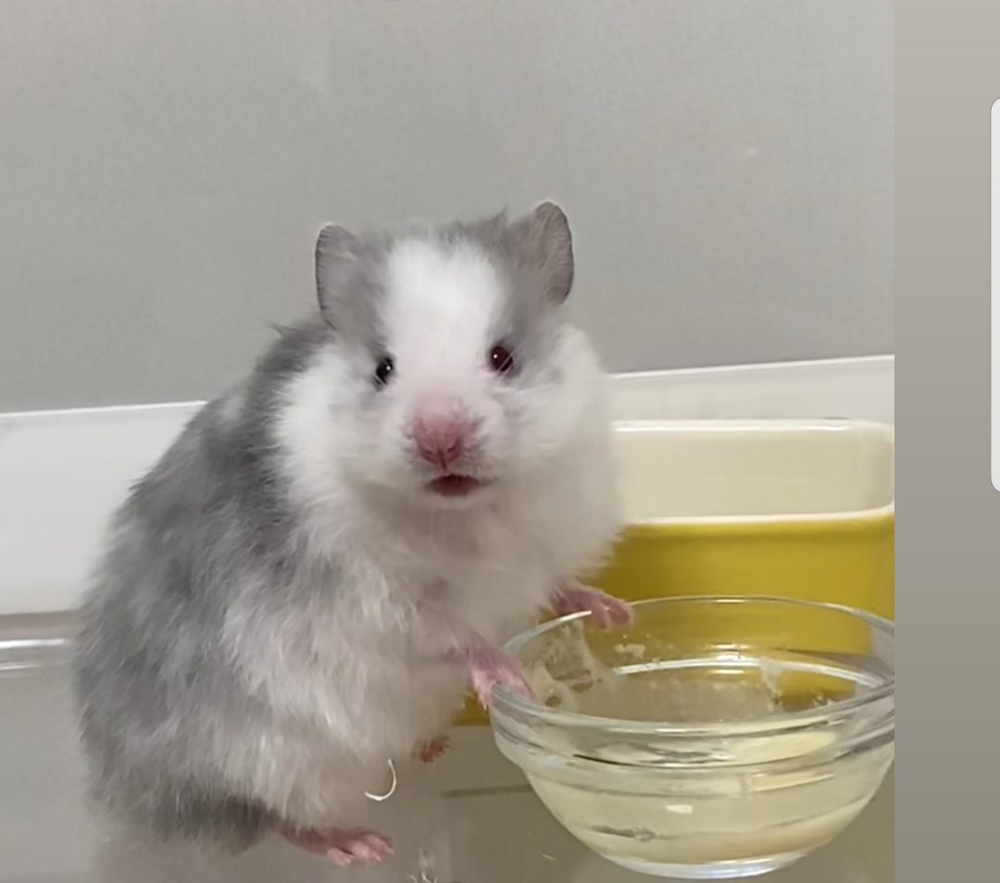

올라리요 어쩌구저쩌구 에베벱베베벱ㅂ 반영되지 않습니다 줄바꾸는 태그를
만들어야겠죠 new line tag 정말로 중요한 시간입니다.제목은 이웃들의 제목과 비교했을때 부끄럽다 우리는 파일명이 제목이기때문이다 이거를 해결시켜주겠따. 줄바꿈이냐 문장으로 바꾸는 것이냐 p태그는 벌릴 수 있는 간격이 한정돼 있다.설명해주고 있습니다. 앞으로 배울거보다 앞으로 배울것에 기쁘기를 태그라는 문법 지금부터 태그를 알게될 어쩌구 왕국의 제왕입니다 이 태그 아래에 있습니다 이 태그덕에 최고의 검색 결과를 도출함 검색엔진이 없으면 어떨까 없으면 정보혁명도 없었을것이다 하루에 100번도 많이 하는 것이다 하이퍼텍스트가 이걸 말한다 에이태그는 어떤 기능을 할까 링크입니다. 링크가 썰렁하지 않나요 수포자였습니다. 말아야지하는 딴생각을 했습니다. 그리고 곧 웹이 뜹니다. 그 뒤로 링크로 탐험했다 많은것을 알게되었다 나처럼 딴생각한 사람이 많았을까요 저는 완정히 다른 인생을 살았을거에요 나는 공부를 좋아함 링크를 타고 탐험하는걸 좋아한다면 웹페이지와 링크라는 길로 연결하는 법도 배웠음 링크는 본드 실로 비유 가능하다 웹페이지를 연결하는 역할이 링크라고 할 수 있다 지금부터 웹페이지들을 엮어서 완성된 웹사이트를 만들어봅시다 뭐할거냐면 여기에서 책처럼 엮으려면 링크를 생성해야한느데 인덱스 점 어쩌구가 나올겁니다. 